CentOS 7¶
はじめに¶
本ドキュメントはCentOS 7 を仮想マシン（以下、VM）として稼働する際の インストール手順、インストール後の初期設定に関する内容を記述します。
インストール手順¶
注釈
本手順はCentOS7.xを想定して書かれています。
特段の記載がない場合を除き、rootユーザーで作業することを想定しています。
1. ハードウェア要件（参考）¶
| 項目 | 設定値 |
|---|---|
| CPU | 64bit対応CPU |
| 最大CPU数 | 160 |
| 最小メモリ | 1GB |
| 最大メモリ | 3TB |
| 最小ストレージ容量 | 7.5GB ※最小インストールした場合 |
| 最大ストレージ容量 | 500TB ※xfsファイルシステム使用の場合 |
2. ISOイメージファイルのダウンロード¶
① CentOSのダウンロードページへアクセスし、[DVD ISO] をクリックする。
② CentOSのダウンロードページからインストールディスクイメージをダウンロードする。 ※今回は理研のミラーサイトを利用。 http://ftp.riken.jp/Linux/centos/7/isos/x86_64/CentOS-7-x86_64-DVD-1611.iso
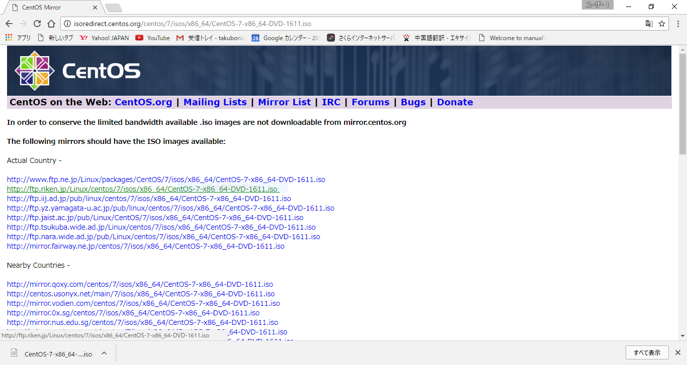③ ダウンロード先を指定して[保存]する。
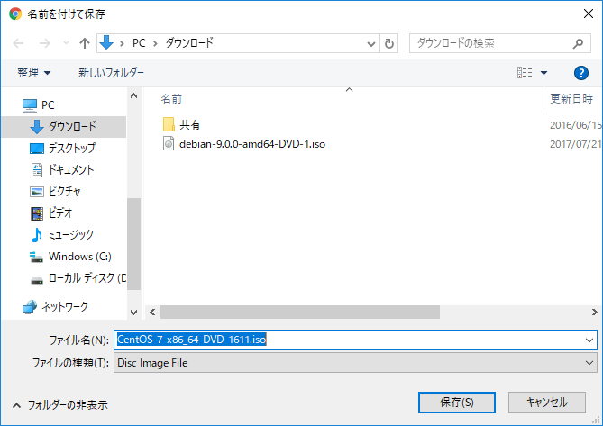 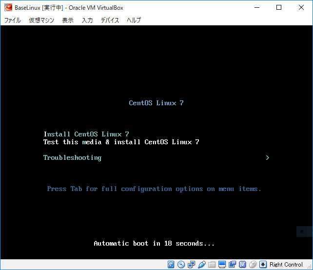 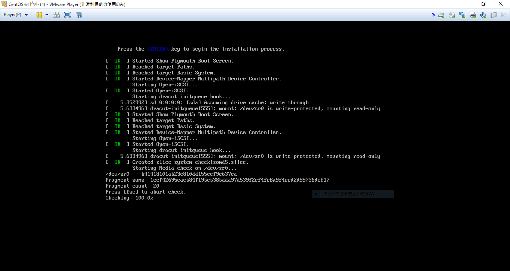 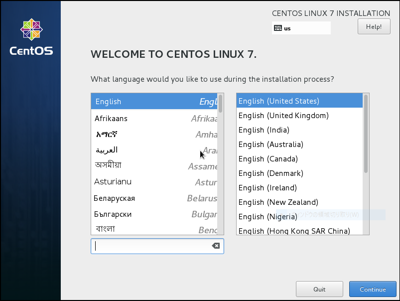 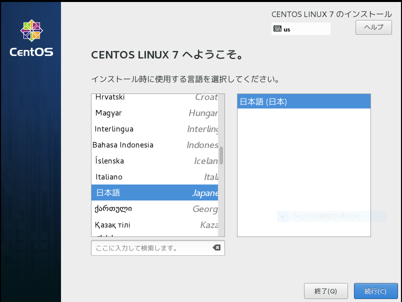 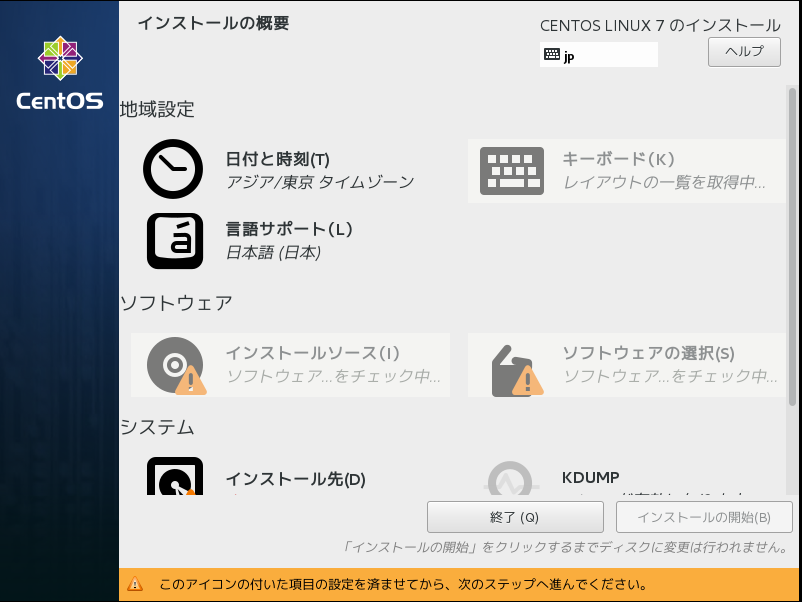 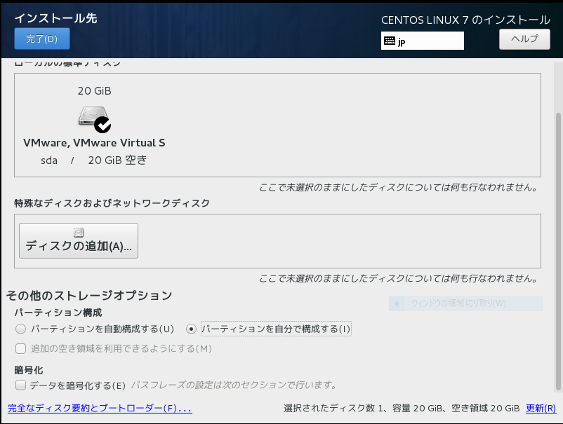 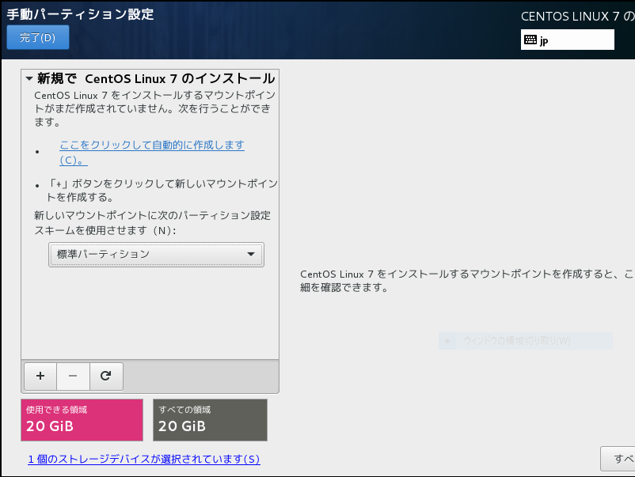 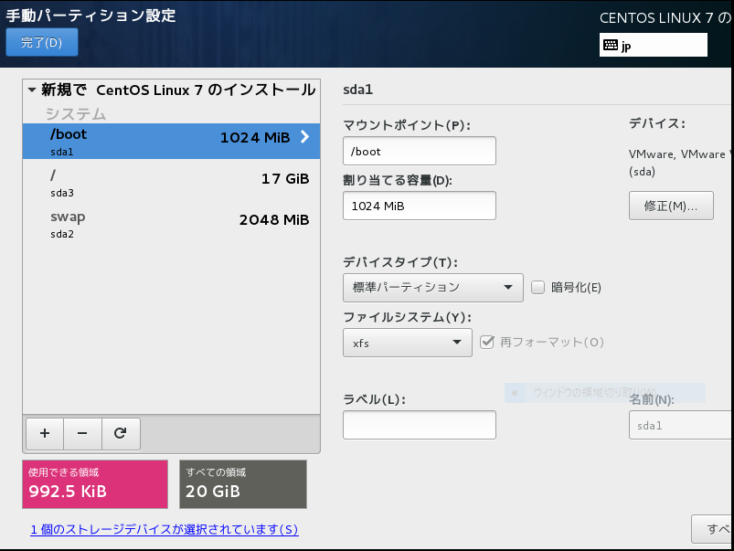 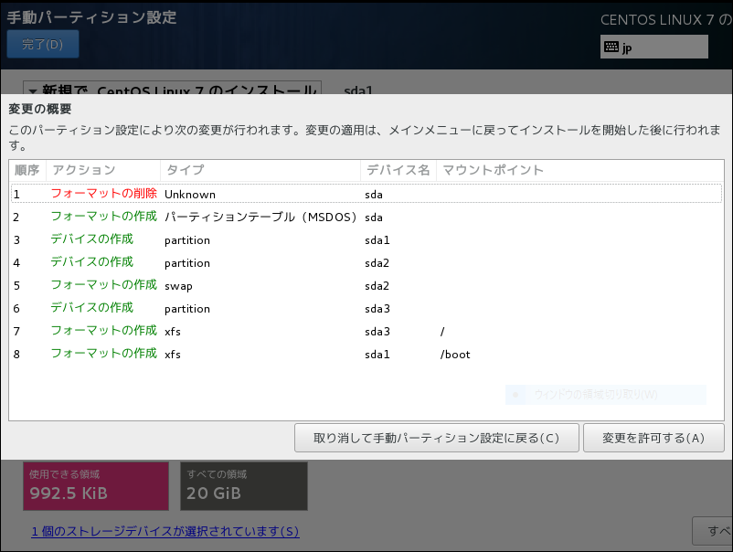 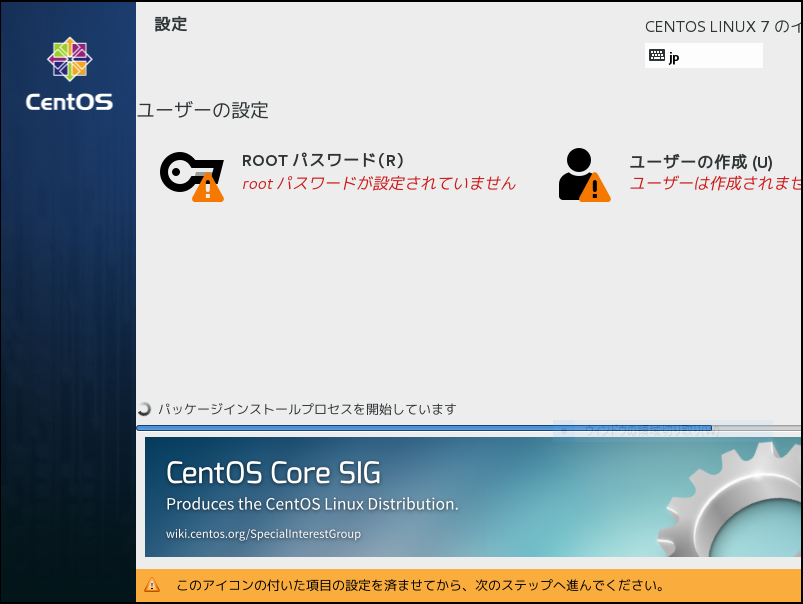 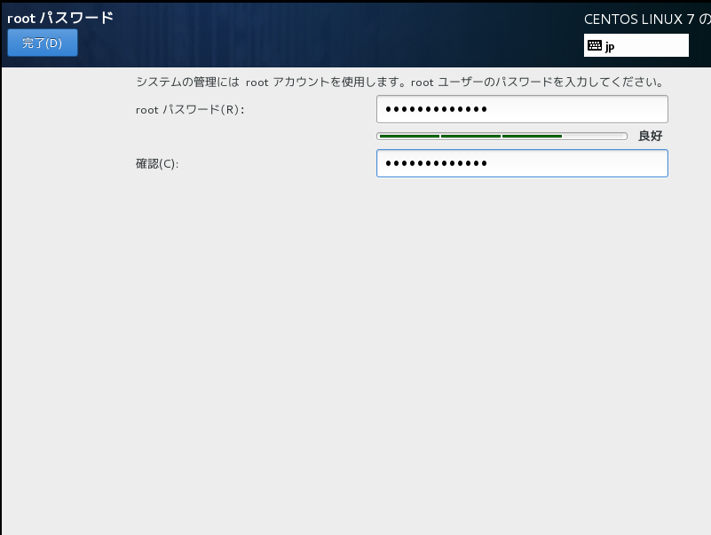 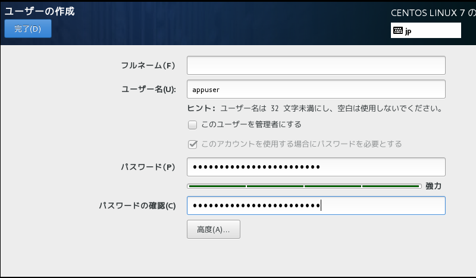 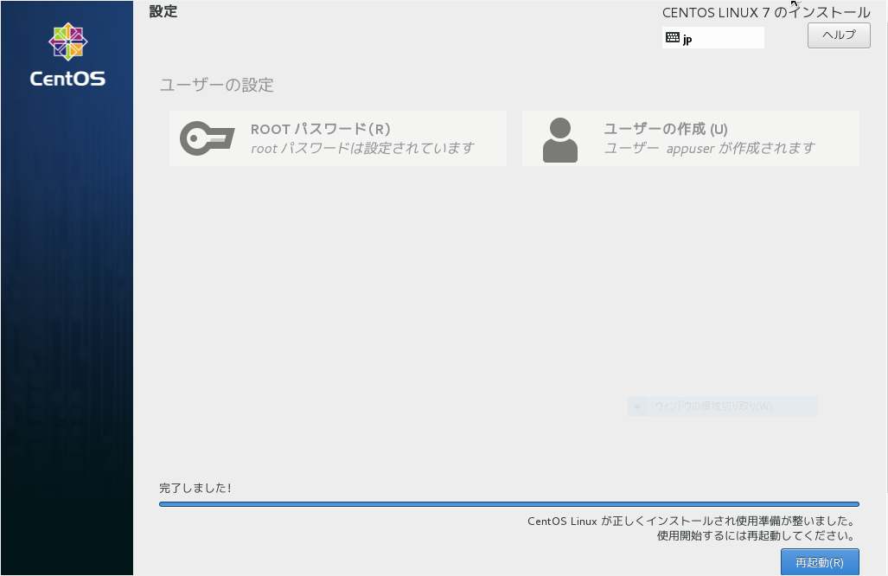 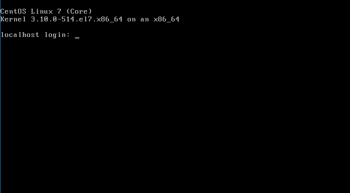